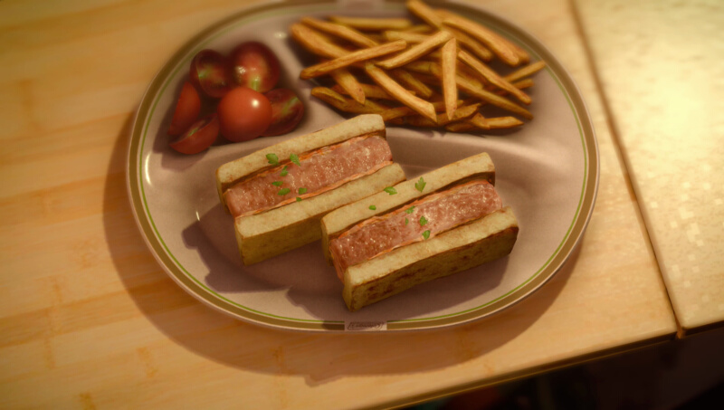

Cannedwich
Active cooking time: 15-30 mins | Total cooking time: 15-60 mins | Serves 1-2

Although you have to travel all the way to a prairie outpost to obtain
this grilled cheese melt on Eos, here on Earth, a few minutes in the
comfort of your kitchen will yield the same delicious results.
Ingredients
To make the sandwich
- 2 slices of white bread, moderately thick
- canola oil (for pan frying)
- 2 slices of Spam, about 0.6in thick (1.5cm)
- 2 slices sandwich cheddar cheese slice
How to (cannedwich)
- Cut 2 slices of white bread into half, remove the bread crust, then
toast the bread in toaster until lightly brown.
- Heat the pan over medium heat and add some canola oil. When it's
ready, pan fry the Spam slices until golden brown and crisp on top.
- Cut the sandwich cheddar cheese slices into the shape of the
bread and Spam. Then, place the cheese slice on top of the toasted
bread, followed by Spam, then by more cheese, and finally by more
toasted bread.
(Optional) To make the side fries
- 1 russet potato
- 4 cups warm water (960mL)
- 2 tbsp corn syrup (30mL)
- canola oil (for frying)
- a pinch of salt
How to (side fries)
- Wash and peel the russet potato skin.
- Slice into planks about 1⁄3 inch thick (0.8cm), and julienne into
sticks.
- Mix 4 cups (1L) of warm water with 2 tablespoons (30mL) of corn
syrup. Soak the potato sticks (aka fries) in the water bath for
approximately 30 minutes to remove excess starch.
- Drain the corn syrup water and use kitchen towel to pat off excess
water from the fries.
- Fry the fries using canola oil that has been preheated to 375°F
(190°C) for 1.5 minutes (first fry). Remove the fries and drain off
excess oil.
- Increase the oil temperature to 400°F (200°C) and fry the fries
again until crispy and golden brown.
- Use kitchen towel to pat off excess oil, and sprinkle with salt to
season the fries.
(Optional) To garnish
- fresh English parsley
- 3 cherry tomatoes, halved
How to
Chop a stalk of fresh English parsley and sprinkle it on top of the
cannedwich. Assemble the cannedwich, cherry tomatoes and fries
on a plate and you are done. Enjoy !
Effect(s)
Strength +100, HP +300
Source